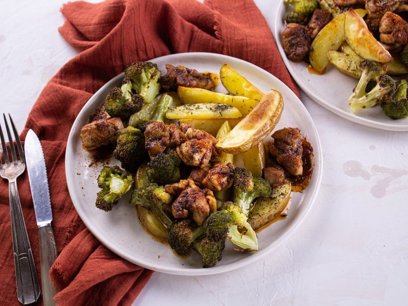
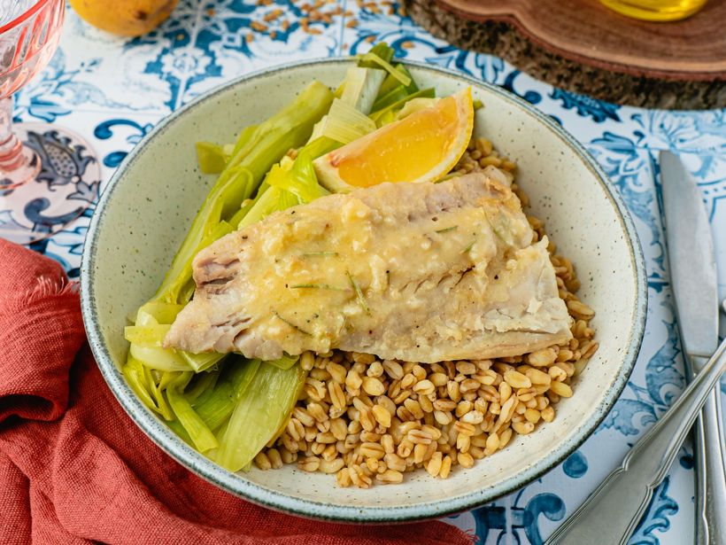

Menu de FreshBite
Découvrez nos plats healthy et gourmands
Salade Fraîche

Une salade rapide et healthy ! La base, des lentilles Beluga, autrement dit le caviar de la
lentille.
Par-dessus, tomates, concombre, câpres et échalote se mélangent
et pour finir, un crémeux de thon citronné au fromage frais Yummy !
Poisson en Crumble
et Légumes Rôtis au Curry

Un crumble bien croustillant qui fera aimer le poisson aux grands et aux petits ! Une panure
à base de
corn-flakes craquants pour la gourmandise, des légumes rôtis au curry...
De quoi s'évader le temps d'un repas !
Poulet aux Épices Cajun & Légumes Rôtis

Maria vous emmène au sud des États-Unis, au cœur de la soul food avec ce poulet sauté aux épices
cajun,
servi avec des pommes de terre et du brocoli rôtis !
Poisson de la Criée & Poireaux Braisés

Un mariage poireaux-poisson de saison, équilibré et raffiné. Le poisson de la criée tout doré est relevé d'un beurre citronné au romarin.
Une recette efficace et simple à préparer.